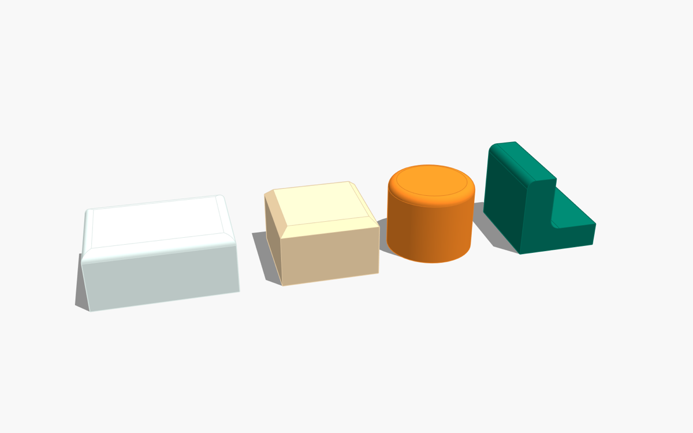
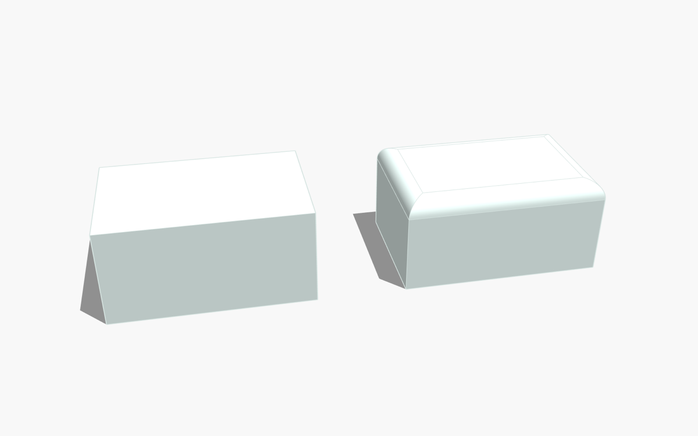
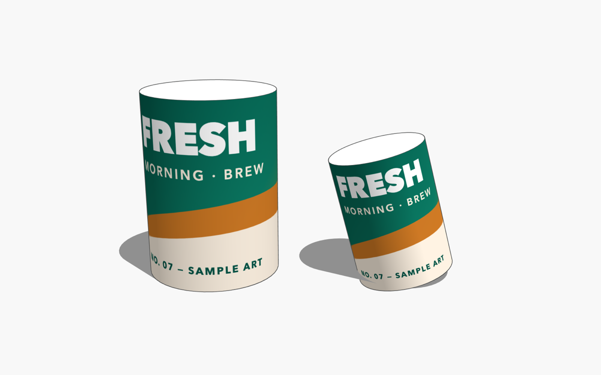
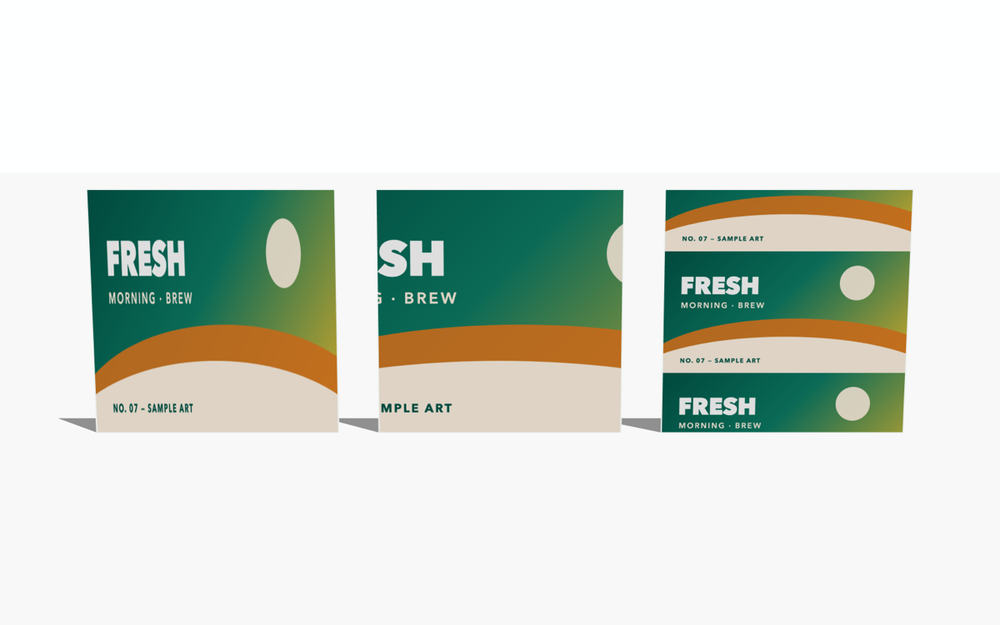
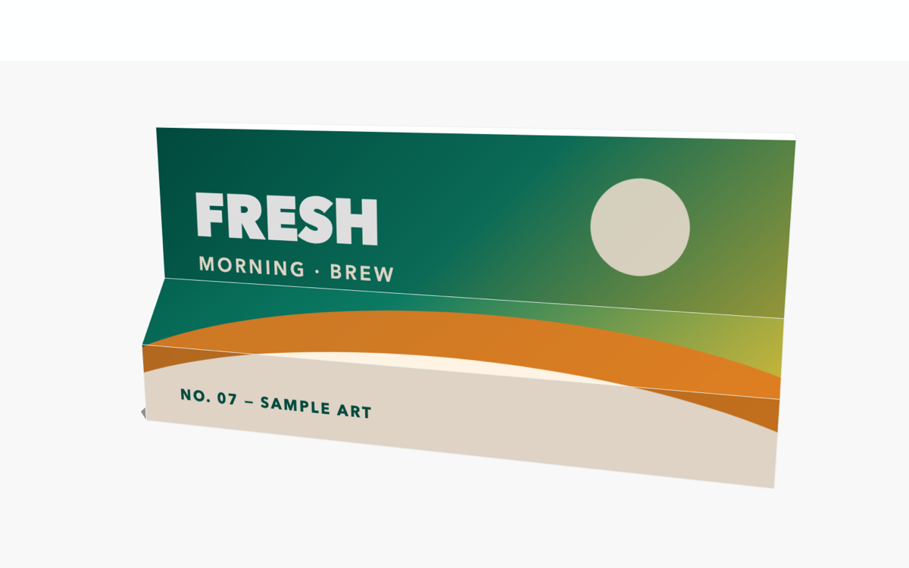

SketchUp Extensions by Andi Dewanto
Support, downloads and tutorials for Simple Bevel and MapEasy. Free · Windows & macOS · SketchUp 2021+.
Simple Bevel
Version 1.3.3
Round or chamfer selected edges in one step — positive radius = fillet, negative = chamfer. Outside and inside corners, chains of connected edges with mitre joints, and a smart Pick Edge Chain selector.


MapEasy
Version 1.0.3
Fast texture mapping: Cylinder Wrap wraps an image around any cylinder (axis detected automatically); Face Fill fits an image to selected faces — Stretch, Cover or Contain, per face or spanned across folds and corners.



Installation
- SketchUp: Extensions › Extension Manager › Install Extension… and choose the
.rbz. - The toolbar appears automatically (otherwise View › Toolbars).
- Each extension has a built-in tutorial: Extensions › [name] › Tentang… (About) › Buka Tutorial.
FAQ
- An edge was skipped. The message names the reason — usually the radius is larger than the adjacent face, or several selected edges meet at one corner.
- The image is on the wrong side of a face. Right-click › Reverse Faces, then run Face Fill again.
- Interface language. The interface is currently Indonesian; an English interface is planned.
- Uninstall. Extension Manager › select the extension › Uninstall.
Contact & bug reports
Email andidewanto@gmail.com — please include your SketchUp version, operating system, the extension version and, if possible, a small .skp that shows the problem.